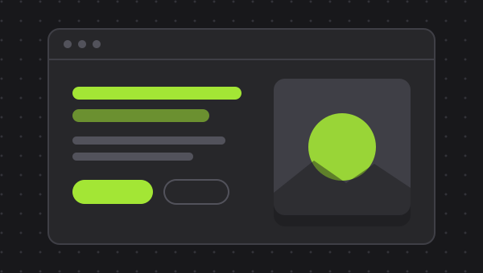
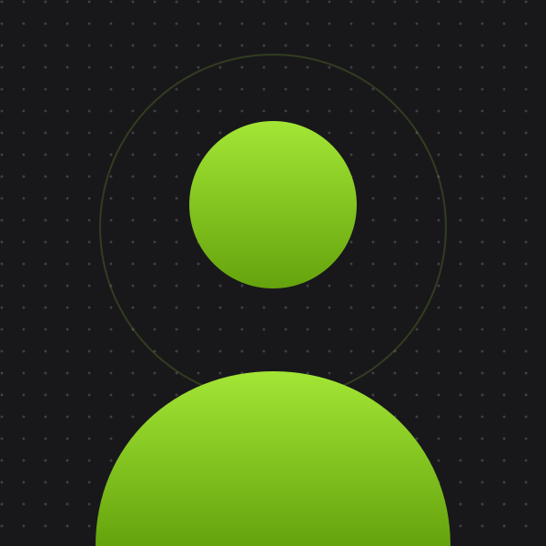
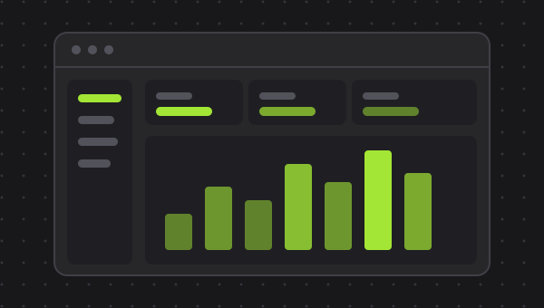
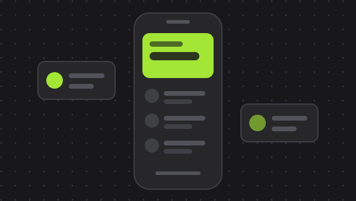

فروشگاه آنلاین
یک فروشگاه آنلاین کامل با سبد خرید، پرداخت و پنل مدیریت با React و Tailwind
React
Tailwind
Redux
توسعهدهنده فرانتاند با تمرکز بر ساخت رابطهای کاربری سریع، رسپانسیو و کاربرپسند

من یک توسعهدهنده فرانتاند مشتاق هستم که به ساخت تجربههای وب زیبا و کاربردی علاقه دارم. با بیش از X سال تجربه در کار با تکنولوژیهای مدرن وب، تمرکز من روی نوشتن کد تمیز، بهینهسازی عملکرد و طراحی رسپانسیو است.
عاشق یادگیری مداوم و حل چالشهای فنی هستم و همیشه در جستجوی پروژههای جدید برای بهبود مهارتم میباشم.
تکنولوژیها و ابزارهایی که با آنها کار میکنم
Semantic & Accessible
Flexbox & Grid
ES6+ & DOM
Hooks & Components
Utility-First
SSR & App Router
Version Control
Mobile-First
AI-Assisted Development
پروژههای اخیری که انجام دادهام

یک فروشگاه آنلاین کامل با سبد خرید، پرداخت و پنل مدیریت با React و Tailwind

داشبورد مدیریت با نمودارهای تعاملی، جداول پیشرفته و حالت تاریک/روشن

اپلیکیشن پیشبینی آب و هوا با API زنده، موقعیت مکانی و انیمیشنهای CSS
مسیر حرفهای من در دنیای برنامهنویسی
نام شرکت / فریلنس
توسعه و نگهداری رابطهای کاربری پیچیده با React و Tailwind CSS. بهینهسازی عملکرد و بهبود تجربه کاربری پروژههای مختلف.
نام شرکت قبلی
یادگیری و کار با HTML، CSS و JavaScript. همکاری در پروژههای واقعی و آشنایی با فرآیندهای تیمی و کنترل نسخه با Git.
اگر به دنبال یک توسعهدهنده فرانتاند برای پروژهتان هستید یا سوالی دارید، خوشحال میشوم با شما صحبت کنم.
ایمیل
mkavian.dev@gmail.com
موقعیت
ایران / ریموت